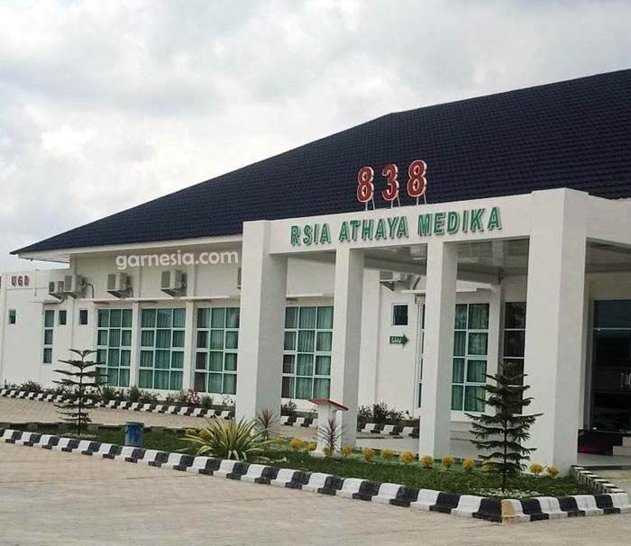

Rumah Sakit Kubu

Salah satu puskesmas di Kabupaten Rokan Hilir melayani pemeriksaan kesehatan, rujukan, surat kesehatan dll. Puskesmas ini melayani berbagai program puskesmas seperti periksa kesehatan (check up), pembuatan surat keterangan sehat, rawat jalan, lepas jahitan, ganti balutan, jahit luka, cabut gigi, periksan tensi, tes hamil, periksa anak, tes golongan darah, asam urat, kolesterol dan lainnya. Puskesmas juga melayani pembuatan rujukan bagi pasien BPJS ke rumah sakit untuk mendapatkan perawatan lanjutan. Pelayanan Puskesmas Kubu Babussalam juga baik dengan tenaga kesehatan yang baik, mulai dari perawat, dokter, alat kesehatan dan obatnya. Puskesmas ini dapat menjadi salah satu pilihan warga masyarakat Kabupaten Rokan Hilir untuk memenuhi kebutuhan terkait kesehatan.
Lebih LanjutRumah Sakit Indah

Rumah Sakit Indah di Kabupaten Rokan Hilir, Riau, adalah sebuah institusi kesehatan yang tidak hanya membanggakan dalam hal fasilitas modern dan peralatan medis canggih, tetapi juga mengutamakan pelayanan yang ramah dan profesional kepada setiap pasien. Para profesional medis dan tenaga kesehatan di rumah sakit ini terkenal karena keahlian mereka dan dedikasi dalam memberikan perawatan yang berkualitas. Mereka tidak hanya mengutamakan pengobatan dan perawatan medis, tetapi juga memberikan perhatian penuh terhadap kebutuhan emosional dan psikologis pasien mereka.
Rumah Sakit Bagan Siapi-api

Rumah Sakit Umum Daerah Bagansiapiapi di Kabupaten Rokan Hilir, Riau, adalah sebuah institusi kesehatan yang memberikan pelayanan medis terbaik kepada masyarakat setempat dan sekitarnya. Terletak di kota Bagansiapiapi yang terkenal dengan pesona pesisirnya, rumah sakit ini memiliki peran vital dalam memastikan akses kesehatan yang berkualitas bagi penduduk di wilayah tersebut. rumah sakit ini juga berperan sebagai pusat pengembangan sumber daya manusia di bidang kesehatan dengan menyediakan program pendidikan dan pelatihan bagi tenaga kesehatan lokal.
Lebih LanjutRumah Sakit Agung

Rumah Sakit Umum Agung di Kabupaten Rokan Hilir, Riau, adalah sebuah pusat kesehatan yang menjadi kebanggaan masyarakat setempat. Terletak di pusat kota, rumah sakit ini menghadirkan fasilitas modern dan layanan kesehatan yang komprehensif untuk memenuhi kebutuhan medis seluruh penduduk kabupaten. Tim medisnya terdiri dari dokter-dokter spesialis yang berpengalaman dan perawat-perawat terlatih, siap memberikan pelayanan kesehatan terbaik bagi setiap pasien.
Rumah Sakit Awal Bros
.jpg)
Rumah Sakit Awal Bros Bagan Batu di resmikan pada 26 Januari 2023 saat ini sudah melayani banyak pasien, baik dari Bagan Batu maupun dari daerah sekitarnya. Rumah Sakit Awal Bros Bagan Batu mengutamakan layanan berkualitas, keselamatan pasien. Rumah Sakit Awal Bros cabang Bagan Batu, terletak di Kabupaten Rokan Hilir di jalan Jendral Sudirman. Dedikasi Rumah Sakit Awal Bros Bagan Batu dalam meningkatkan kesehatan pasien tercermin pada penawaran program pelayanan kesehatan yang komprehensif. Dalam proses diagnosa, tindakan, terapi, hingga rehabilitasi, kami menyediakan layanan yang terintegrasi dengan jaringan Rumah Sakit Awal Bros lainnya. Hal tersebut merupakan bentuk komitmen Rumah Sakit Awal Bros untuk memenuhi kebutuhan layanan kesehatan setiap individu. Selain berfokus pada penyembuhan, Rumah Sakit Awal Bros Bagan Batu mendukung setiap pasien untuk menjalani hidup yang sehat dengan menyediakan beragam paket pemeriksaan kesehatan (paket medical check up).
Lebih Lanjut https://awalbros.com/branch/baganbatu/Rumah Sakit Awal Bros
Rumah Sakit Ibu dan Anak Athaya Medika, atau biasa disebut RSIA Athaya Medika, adalah rumah sakit ibu dan anak yang terletak di Tanah Putih, Kabupaten Rokan Hilir di Provinsi Riau.
Lebih Lanjut https://awalbros.com/branch/baganbatu/